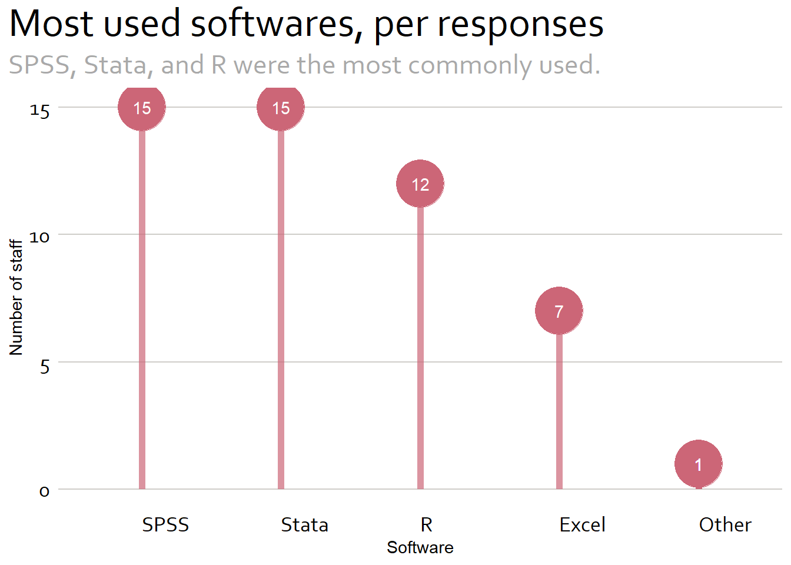
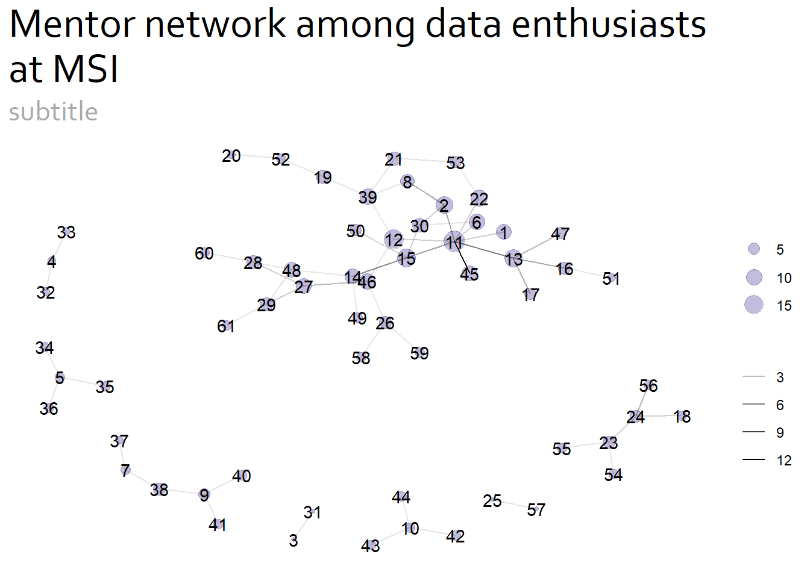
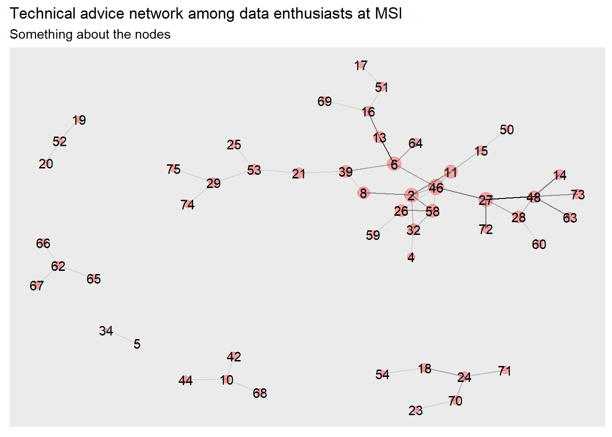

Internal Mentoring and Tech Advice Networks
Introduction
At the January 9, 2023 all company Monday meeting, Melanie Murphy presented on the Advanced Analytics and Data Science team. At the end of her presentation, we requested those interested in engaging with this team to fill out a small survey about their analytics background and where they work within the company. The final two questions, however, asked about respondents’ engagement with colleagues. They were:
- Who within MSI are you able to turn to for mentorship/career guidance?
- Who within MSI do you turn to most often to discuss or get help on technical questions?
The responses to these questions are the topic at hand in this post. First, we will look at the different statistical and software skills, and then we will analyze the informal networks that have developed within MSI, one for mentoring and the other for specific technical questions. We will then compare these with the official organizational structure.
Our methology and data
The data come from a voluntary, virtual survey that was distributed during a company meeting. The response rate was low so the Advanced Analytics team identified additional staff at the home office and on field teams to take the survey to give us a better picture of analytics at MSI. All names have been anonymized.
Let’s start by looking at some summary statistics.
Summary Statistics
We received 44 responses to the survey with 20 responses from home office staff and 24 responses from field office staff representing projects in Iraq, Nigeria, Jordan, and Zambia.
Code
#identifying the analytic softwares used at MSI
#find the individual softwares
softwares <- paste(c("R", "Stata", "SPSS", "Spss", "Nvivo", "Qualtrics", "MaxQDA"
, "Python", "ArcGIS", "Excel", "excel", "SAS"
, "EpiInfo", "STATA", "Kobo Tool Box", "Dedoose"
, "SMath Studio", "Tableau"), collapse = "|")
#create a new column that extracts the names of software used
#then create another column that unnests any lists
df1 <- df |>
mutate(new = str_extract_all(software, pattern = softwares)) |>
unnest(new)
#clean up a few software names
df1$new <- df1$new |>
recode("STATA" = "Stata"
, "Spss" = "SPSS"
, "EXCEL" = "Excel")
#then create a count of which software packages are used at MSI
df2 <- df1 |>
filter(!is.na(new)) |>
group_by(new) |>
count() |>
mutate(new2 = case_when(n == 1 ~ "Other"
, TRUE ~ new)) |>
select("Software" = new2, "Count" = n, -new) |>
arrange(desc(Count))Adding missing grouping variables: `new`Code
ggplot(data = df2
, aes(reorder(factor(Software), -Count), Count)) +
geom_point(size = 14, color = my_pal[[2]]) +
geom_segment(aes(x = factor(df2$Software), xend = factor(df2$Software)
, y = 0, yend = df2$Count)
, linewidth = 2
, color = my_pal[[2]]
, alpha = .7) +
geom_text(aes(x = Software, y = Count, label = Count)
, color = "white") +
labs(title = "Most used analytic software packages"
, subtitle = "SPSS, Stata, and R are the most commonly used."
, y = "Number of staff"
, x = "Software") +
scale_y_continuous(limits = c(0, 20))+
theme.plot()
Network statistics
Next, let’s look at the networks. We collected data for two networks – one related to mentoring and another related to technical guidance. To understand the networks we have to identify the people and their connections. In network analysis these are called, nodes and edges, respectively. Let’s observe the first five rows of data for the mentor network and their connections.
Code
```{r}
#| label: Edges and nodes
#| tbl-cap: "Network data"
#| tbl-subcap:
#| - "Edges"
#| - "Nodes"
#| layout-ncol: 2
#| tbl-colwidths: [20,20]
#read in the dataframes
#mentoring
mentor_nodes <- readxl::read_xlsx(here::here("network_analysis_sandbox/data/nodes_mentor.xlsx"))
mentor_edges <- readxl::read_xlsx(here::here("network_analysis_sandbox/data/edges_mentor.xlsx"))
#tech questions
tech_nodes <- readxl::read_xlsx(here::here("network_analysis_sandbox/data/nodes_tech.xlsx"))
tech_edges <- readxl::read_xlsx(here::here("network_analysis_sandbox/data/edges_tech.xlsx"))
kable(head(mentor_nodes, n = 5))
kable(head(mentor_edges, n = 5))
```Network data
| id |
|---|
| 1 |
| 2 |
| 3 |
| 4 |
| 5 |
| from | to |
|---|---|
| 1 | 11 |
| 2 | 11 |
| 2 | 30 |
| 3 | 31 |
| 4 | 32 |
Code
#| label: fig-charts
#| fig-cap: "Networks"
#| fig-subcap:
#| - "Mentor network"
#| - "Technical advice network"
#| layout-nrow: 2
#convert the mentor_edges dataframe to a matrix
mentors <- graph_from_data_frame(mentor_edges)
#add degree
mentors$degree <- degree(mentors)
#add edge_betweenness
mentors$edge_betweenness <- edge_betweenness(mentors)
#add neighborhood size (i.e. size of neighborhood within 2 edges of a node)
mentors$degree2 <- neighborhood.size(mentors, 2)
ment_graph <- ggraph(mentors, layout = "with_kk") +
geom_node_point(aes(size = mentors$degree2)
, color = "blue"
, alpha = .3) +
geom_node_text(aes(label = name )) +
geom_edge_link(aes(alpha = mentors$edge_betweenness)) +
labs(title = "Mentor network among data enthusiasts at MSI"
, subtitle = "subtitle") +
theme(legend.position = "none")
#Repeat for tech side
techs <- graph_from_data_frame(tech_edges)
#add degree
techs$degree <- degree(techs)
#add edge_betweenness
techs$edge_betweenness <- edge_betweenness(techs)
#add neighborhood size (i.e. size of neighborhood within 2 edges of a node)
techs$degree2 <- neighborhood.size(techs, 2)
tech_graph <- ggraph(techs, layout = "with_kk") +
geom_node_point(aes(size = techs$degree2)
, color = "red"
, alpha = .3) +
geom_node_text(aes(label = name )) +
geom_edge_link(aes(alpha = techs$edge_betweenness)) +
labs(title = "Technical advice network among data enthusiasts at MSI"
, subtitle = "Something about the nodes") +
theme(legend.position = "none")
ment_graphWarning: Using the `size` aesthetic in this geom was deprecated in ggplot2 3.4.0.
ℹ Please use `linewidth` in the `default_aes` field and elsewhere instead.
Code
tech_graph
In the entire mentor dataset there are 61 nodes. These nodes have 59 connections. The resulting network looks like this.